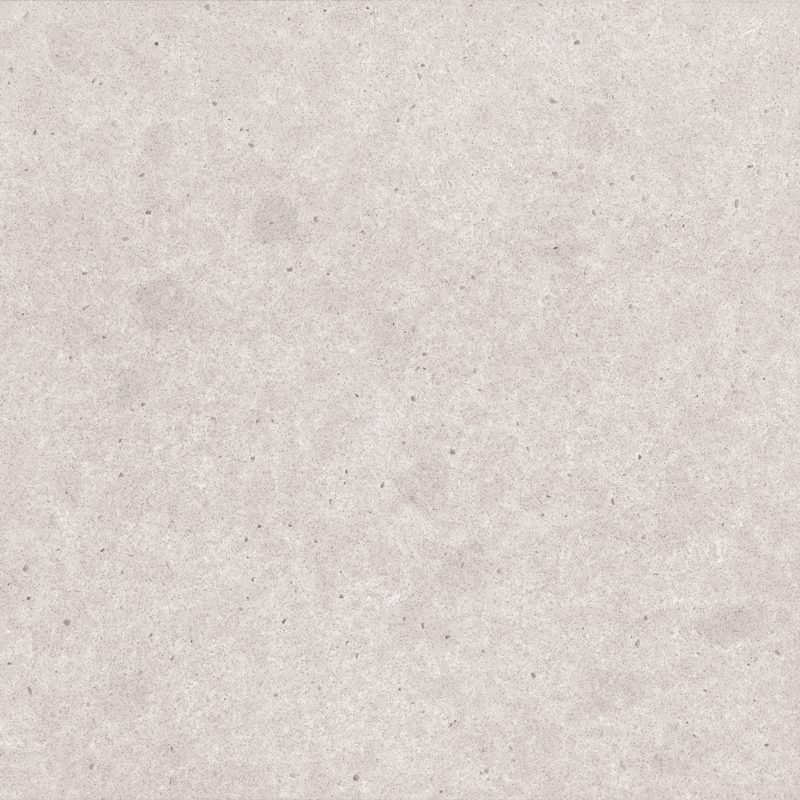
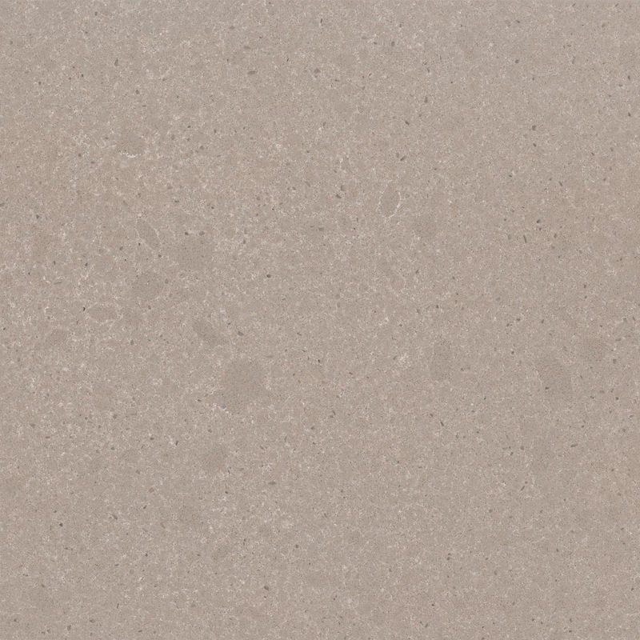
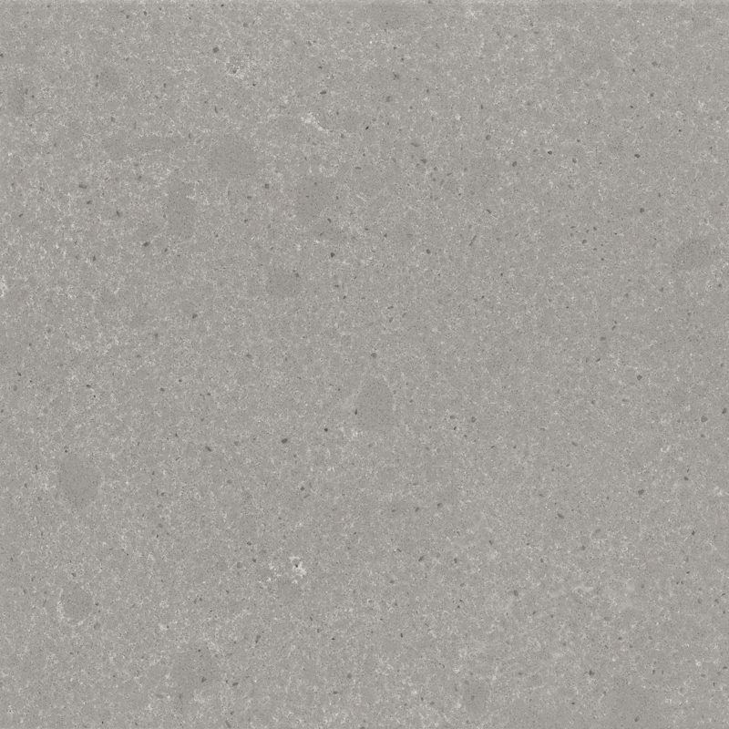
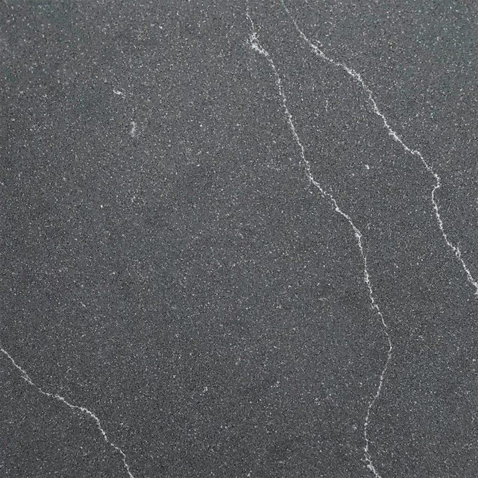
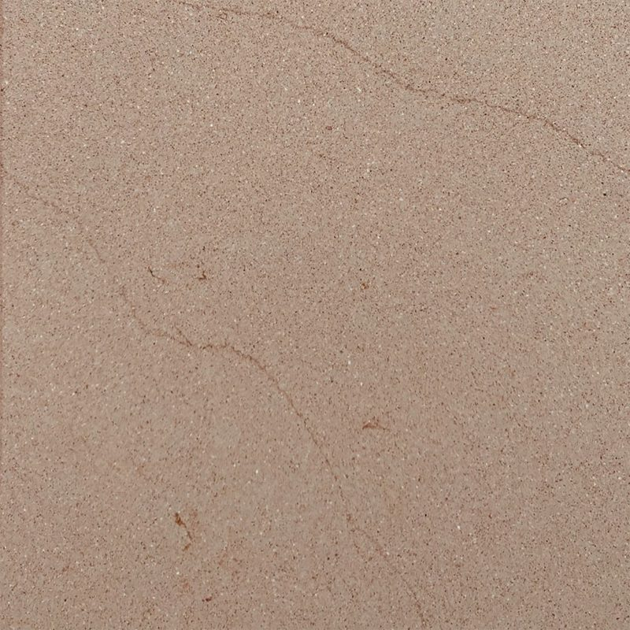
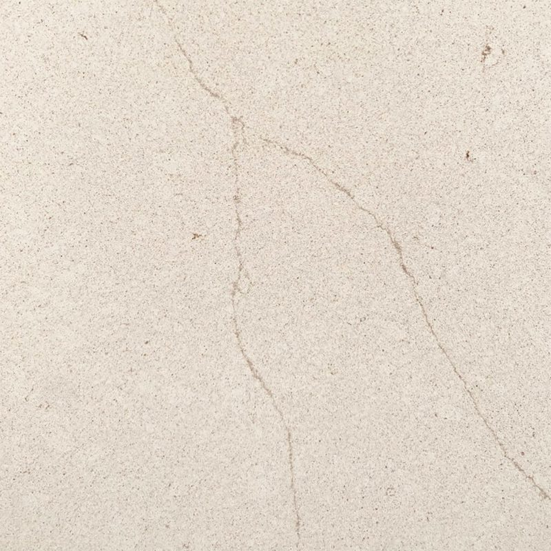

MStone Surfaces
Pierre recyclée MStone : un composite sans quartz pour votre plan de travail
Le plan de travail en pierre recyclée MStone est la plus radicale de nos surfaces écoconçues : ni quartz, ni porcelaine, mais des minéraux recyclés liés par des résines d'origine végétale. Six coloris aux noms mythologiques, un décor dans toute l'épaisseur et un entretien à l'eau savonneuse. Nous le façonnons à Mafra.
Le plan de travail Pierre recyclée MStone
Composite écoconçu sans quartz ni porcelaine, fabriqué à partir de minéraux recyclés liés par des éco-résines d'origine végétale. Non poreux et non jaunissant, il garde son décor dans toute l'épaisseur et s'entretient à l'eau savonneuse.
Pierre recyclée MStone
- Mat
- Poli
- Épaisseurs 20 mm
- Composition
- Minéraux recyclés
- Empreinte carbone
- Jusqu'à -40 %
- Chaleur sèche
- 180 °C
- Sans traitement
- Non poreux
Finitions et formats
- Mat
- Poli
- 20 mm
Coloris Pierre recyclée MStone
6 coloris disponibles, à voir aussi en vrai dans notre usine de Mafra sur rendez-vous.

ApollonMat · PoliFond blanc cassé grisé, nuages doux et fines mouchetures taupe.
AthenaMat · PoliFond greige beige-taupe parsemé de fines particules brunes et claires.
AthosMat · PoliGris moyen uniforme au grain très fin, clair et foncé.
HeliosMat · PoliAnthracite proche de l'ardoise, traversé de fines veines blanches en diagonale.
HyperionMat · PoliBeige sable profond tirant vers le camel, veinage ton sur ton discret.
OrionMat · PoliBlanc cassé ivoire aux délicates veines beige-gris en diagonale.
Ambiances
Pierre recyclée MStoneAmbiance salle de bain

Pourquoi choisir la pierre recyclée MStone pour votre plan de travail
Ce composite répond à ceux qui veulent réduire l'impact de leur cuisine sans renoncer au confort d'usage. Selon MStone Surfaces, son empreinte carbone peut être réduite jusqu'à 40 %, et l'absence de quartz en fait une matière différente des quartz classiques.
Au quotidien, il se montre facile à vivre : non poreux, il ne demande aucun traitement, et il est annoncé non jaunissant, un point important pour les teintes claires. Il supporte 180 °C en chaleur sèche ; au-delà, un dessous de plat s'impose.
Son décor est présent dans toute l'épaisseur. Concrètement, les chants, les découpes d'évier ou de plaque et les éventuelles petites égratignures gardent le même aspect que la surface, sans laisser apparaître une couche différente.
Bien choisir son coloris de pierre recyclée MStone
Les six coloris se répartissent entre clairs lumineux, tons sable et teintes profondes.
- Apollon : blanc cassé grisé, nuages doux et fines mouchetures taupe, pour une cuisine claire et naturelle.
- Orion : blanc ivoire aux délicates veines beige-gris en diagonale, plus élégant.
- Athena : greige parsemé de fines particules, très facile à associer au bois.
- Hyperion : beige sable profond tirant vers le camel, chaleureux et ton sur ton.
- Athos : gris moyen uniforme au grain très fin, pour un rendu sobre et contemporain.
- Helios : anthracite proche de l'ardoise, traversé de fines veines blanches.
Deux finitions sont possibles, mat ou poli, en 20 mm. Le mat accentue l'aspect minéral et brut, le poli fait ressortir les mouchetures.
Vos questions
Que veut dire « non jaunissant » pour un plan de travail ?
Certaines surfaces à liant résine peuvent prendre une teinte légèrement jaune avec le temps, sous l'effet de la lumière. La pierre recyclée MStone est annoncée non jaunissante par son fabricant : ses coloris clairs, comme Apollon ou Orion, sont conçus pour garder leur teinte. C'est un critère important si votre cuisine est très lumineuse ou si vous choisissez un blanc.
Comment entretenir un plan de travail en pierre recyclée MStone ?
C'est l'un des plus simples à entretenir : de l'eau savonneuse et une éponge douce suffisent au quotidien, sans aucun traitement hydrofuge. Essuyez les liquides sans attendre, évitez les décapants agressifs et les tampons abrasifs, et posez toujours les récipients brûlants sur un dessous de plat, la résistance annoncée étant de 180 °C en chaleur sèche. Une planche protège la surface des lames.
Parlons de votre projet
Un expert étudie votre demande et vous répond sous 48 heures ouvrées, avec une proposition sur mesure.